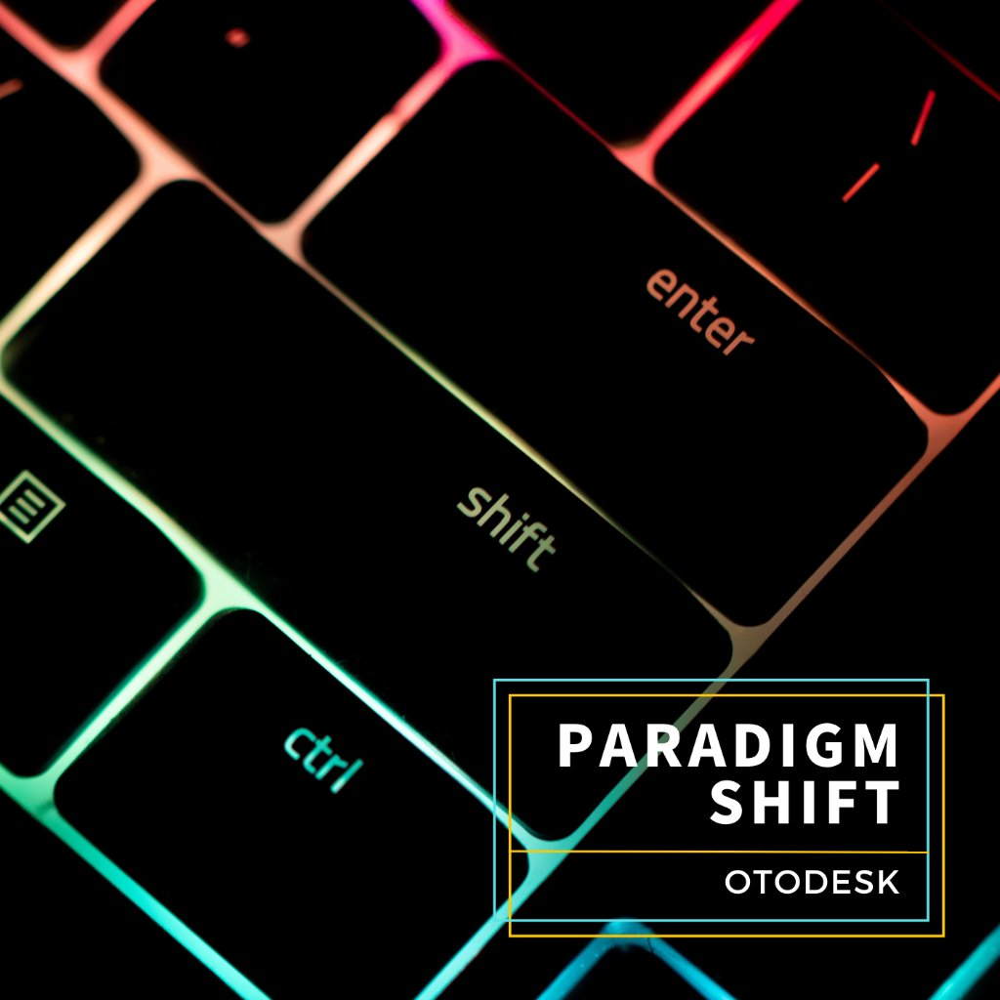

SOUND LAB
SPEC: DIRECT-DRIVE TURNTABLE
ORIGINAL WORKS BY OTODESK
VINYL PLAYER // SOUND ARCHIVE
OTODESKのプラグインとサウンドデザインで制作されたオリジナル音源コレクション。トラックリストから楽曲を選択し、ターンテーブルで再生できます。
DECK SKIN MATRIX
X: 00.00 / Y: 00.00 // INTERACTIVE STAGE
AUDIO REACTIVE // CLICK OR MOVE CURSOR
AUDIO STREAM: 44.1kHz STEREO
DIRECT DRIVE MOTOR
OTODESK // DISK-01
STANDBY
•
33⅓ RPM

TRACK 01
OTO-001
PARADIGM SHIFT
OTODESK
SPECTRUM [20Hz - 20kHz]
-INF dBFS
00:00
03:19
85%
album
SELECT RECORD // TRACK CRATE
1 TRACK AVAILABLE
再生したい楽曲を選択してください。選択するとターンテーブルのレコード盤がその楽曲のピクチャーディスクに切り替わります。
ALL TRACKS PRODUCED BY OTODESK
320kbps STREAM